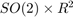
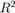
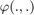
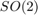
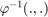
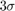

2D Robot SLAM - Example
Goals of this script:
- apply the UKF for performing 2D SLAM (Simultaneous Localization And Mapping).
- discover a computationally alternative way for performing UKF insipred from [HMR13]. This alternative leads to computational speed improvement when only a part of the state is involved in a propagation or in update step.
- augment the state when a new landmark is observed in a UKF derivative-free way.
We assume the reader is already familiar with the approach described in the tutorial.
This script considers the 2D robot SLAM problem where the robot is equipped with wheel odometry and observes unknown landmark measurements. The robot state is propagated through the odometry model and landmark observations are used in the UKF measurement step. Landmarks are static and we assume no error coming from data association. We reproduce the simulations that are described in [HMR10], [HMR13].
Contents
Initialization
Start by cleaning the workspace.
clear all; close all;
Simulation
The trajectory of the robot consists of turning at constant speed.
% sequence time (s) T = 2500; % odometry frequency (Hz) odo_freq = 1; % true speed of robot (m/s) v = 0.25; % true angular velocity (rad/s) gyro = 1.5/180*pi; % odometry noise standard deviation (see [1]) odo_noise_std = [0.05*v/sqrt(2); % speed (v/m) 0.05*v*sqrt(2)*2]; % angular speed (rad/s) % observation noise standard deviation (m) obs_noise_std = 0.1; % total number of timestamps N = T*odo_freq; % time between succesive timestamps (s) dt = 1/odo_freq;
When simulating data, we generate a map. The map consists of landmarks constantly spaced on a circle with slightly higher radius than the radius of the robot trajectory.simulate true trajectory and noisy input
[states, omegas, ldks] = slam2d_simu_f(T, odo_freq, odo_noise_std, ... v, gyro); % number of landmarks N_ldk = size(ldks, 2); % simulate landmark measurements ys = slam2d_simu_h(states, obs_noise_std, N_ldk, ldks);
The state and the input contain the following variables:
states(n).Rot % orientation (matrix) states(n).p % robot position states(n).p_l % landmark positions omegas(n).gyro % robot angular velocity omegas(n).v % robot speed
A measurement contains observation of all visible landmarks as:
y = ys(:, :, n) % measurement at timestamp n y_k = n(:, k) % k-th observed landmark at instant n, where y_k(3) % is the landmark indice
Filter Design and Initialization
We choose to embed the robot state in  and each landmark position in , such that:
- the retraction  is the  exponential map for orientation, i.e. and the standard vector addition for robot and landmark positions.
- the inverse retraction  is the logarithm for orientation and the standard vector subtraction for robot and landmark positions.
% propagation noise matrix ukf_Q = diag(odo_noise_std.^2); % measurement noise matrix ukf_R = obs_noise_std.^2 * eye(2); % initial error matrix ukf_P0 = zeros(3, 3); % The state is perfectly initialized without landmark % sigma point parameters ukf_alpha = [1e-3, 1e-3, 1e-3]; % Regarding implementation, we use the Jacobian UKF (JUKF) that is adapted % to the problem, as it spare some time when only a part of the space is % involved in a propagation or update step. See the Python documentation. % asses UKF function ukf_f = @slam2d_f; ukf_h = @slam2d_h; % reduced error used during propagation ukf_red_phi = @slam2d_red_phi; ukf_red_phi_inv = @slam2d_red_phi_inv; % error used during update ukf_up_phi = @slam2d_phi; % we do not need phi_inv fonction for update % error used for augmenting state ukf_z = @slam2d_z; ukf_z_aug = @slam2d_z_aug; ukf_aug_phi = @slam2d_aug_phi; % reduced weights during propagation ukf_red_weights = ukf_set_weight(3, 2, ukf_alpha); ukf_red_idxs = 1:3; % indices corresponding to the robot state in P % weights during update ukf_weights = ukf_set_weight(5, 2, ukf_alpha); ukf_aug_weights = ukf_set_weight(3, 2, ukf_alpha); ukf_aug_idxs = 1:3; % indices corresponding to the robot state in P ukf_cholQ = chol(ukf_Q); % initialize the filter ukf_state = states(1); ukf_state.p_l = []; ukf_P = ukf_P0; % set variables for recording estimates along the full trajectory ukf_states = ukf_state; ukf_Ps = zeros(N, length(ukf_P), length(ukf_P)); ukf_Ps(1, 1:length(ukf_P), 1:length(ukf_P)) = ukf_P; % indices of already observed landmarks ukf_lmk = [];
Filtering
The UKF proceeds as a standard Kalman filter with a simple for loop.
for n = 2:N % propagation [ukf_state, ukf_P] = ukf_jacobian_propagation(ukf_state, ukf_P, ... omegas(n-1), ukf_f, dt, ukf_red_phi, ukf_red_phi_inv, ukf_cholQ, ... ukf_red_weights, ukf_red_idxs); y = ys(:, :, n); N_y = length(find(y(3, :) > 0)); % set observalibity matrice and residual H = zeros(0, length(ukf_P)); res = zeros(0); % set ukf state for update ukf_up_state.Rot = ukf_state.Rot; ukf_up_state.p = ukf_state.p; Rot = ukf_state.Rot; p = ukf_state.p; % update each landmark already in the filter for i = 1:N_y idx = find(~(ukf_lmk - y(3, i))); if isempty(idx) continue end % indices of the robot and observed landmark in P up_idxs = [1:3 2+(2*idx:2*idx+1)]; ukf_up_state.p_l = ukf_state.p_l(:, idx); % compute observability matrices and residual [H_i, res_i] = ukf_jacobian_update(ukf_up_state, ukf_P, ... y(1:2, i), ukf_h, ukf_up_phi, ukf_weights, up_idxs); % increase observabily matrix and residual H = [H; H_i]; res = [res; res_i]; end % update only if some landmards have been observed if size(H, 1) > 0 R_n = obs_noise_std^2 * eye(size(H, 1)); % update state and covariance with Kalman update [ukf_state, ukf_P] = kf_update(ukf_state, ukf_P, H, res, ... R_n, ukf_up_phi); end % augment the state with new landmark for i = 1:N_y idx = find(~(ukf_lmk - y(3, i))); if ~isempty(idx) continue end % augment the landmark state ukf_lmk = [ukf_lmk; y(3, i)]; % indices of the new landmark idx = find(~(ukf_lmk - y(3, i))); up_idxs = [1:3 2+(2*idx:2*idx+1)]; % new landmark position p_l = p + Rot*y(1:2, i); ukf_up_state.p_l = p_l; ukf_state.p_l = [ukf_state.p_l p_l]; % get Jacobian and then covariance following [2] R_n = obs_noise_std^2 * eye(2); [~, ukf_P] = ukf_aug(ukf_state, ukf_P, y(1:2, i), ukf_z, ... ukf_z_aug, ukf_aug_phi, ukf_aug_weights, ukf_aug_idxs, R_n); end % save estimates ukf_states(n) = ukf_state; ukf_Ps(n, 1:length(ukf_P), 1:length(ukf_P)) = ukf_P; end
Results
slam2d_results_plot(ukf_states, ukf_Ps, states, dt, ldks);
Undefined function or variable 'fig'. Error in slam2d_results_plot (line 41) print(fig, 'matlab/examples/html/main_slam2d_01', '-dpng', '-r600') Error in main_slam2d (line 218) slam2d_results_plot(ukf_states, ukf_Ps, states, dt, ldks);
As UKF estimates the covariance of the error, we have plotted the 95 % confident interval (). We expect the error keeps behind this interval, and note note the confidence interval decreases along time.
Conclusion
This script shows how the UKF on parallelizable manifolds can be used for 2D SLAM. By leveraging numerical Jacobian inference, one obtains a computationally more efficient filter. The UKF works apparently well for this example, but consistency issues happear at the end of the trajectory.
You can now:
- consider non-linear range and bearing measurement.
- benchmark the UKF with different function error and compare it to the extended Kalman filter and invariant extended Kalman filter of [BB17].